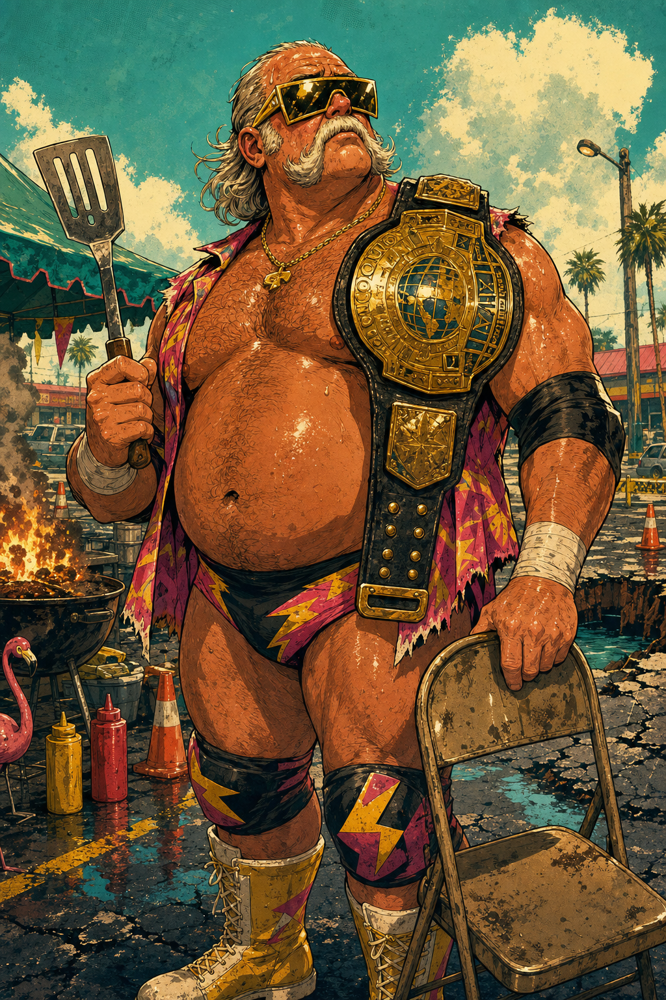
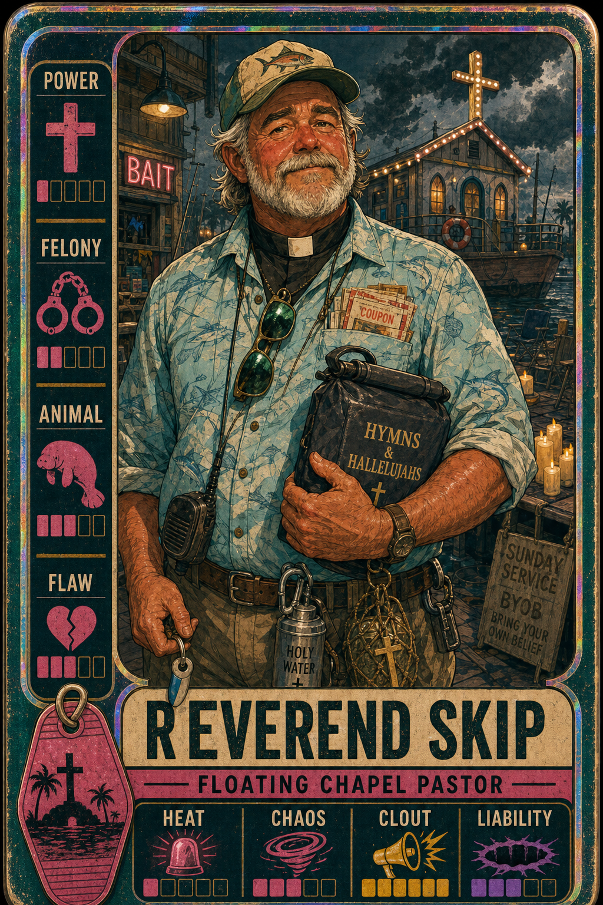
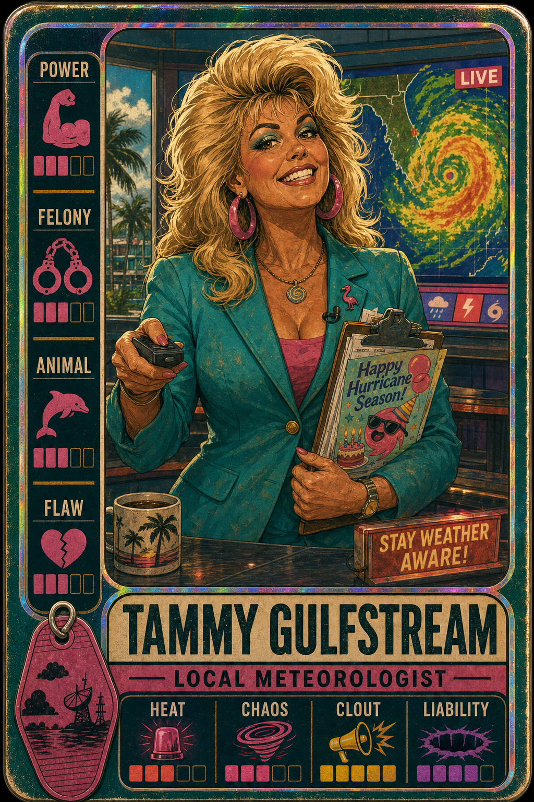
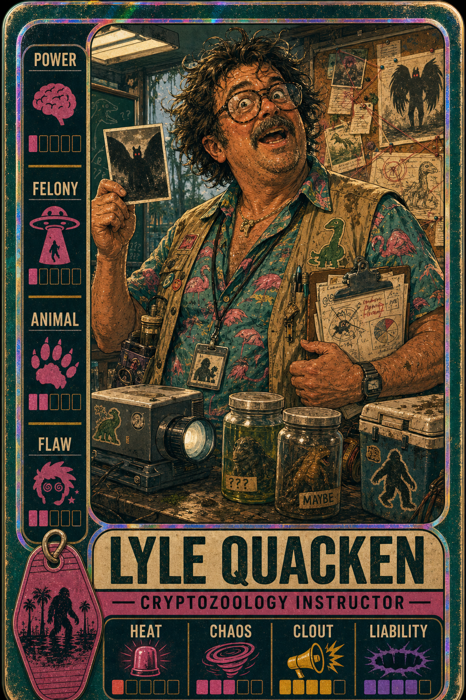
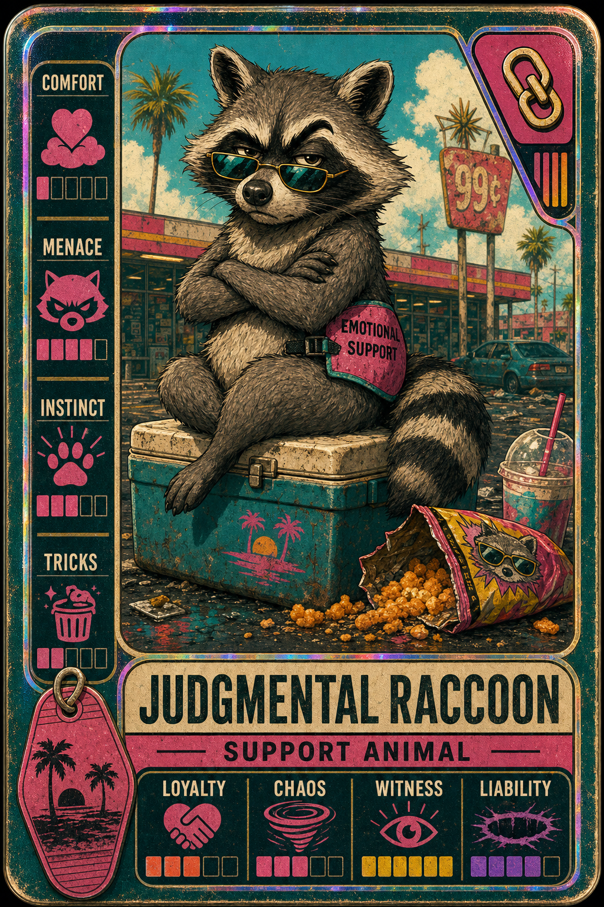

The Florida Man Gazette
Local Lunatics Launch Trading-Card RPG; Authorities Baffled
Fourteen residents — including a sinkhole liaison, a pirate-radio host and one (1) emotionally-supportive raccoon — have reportedly been "statted out" for tabletop play. Officials urge calm.
In a development that surprised no one and concerned everyone, the entire cast of local characters has been transcribed onto holographic cards and assigned numerical values for HEAT, CHAOS, CLOUT and LIABILITY. Game, witnesses say, is afoot.

"He just rolled for POWER and the chair gave out," said a county sinkhole liaison who declined to be named but did provide a clipboard. She is herself a card. "I have a flamingo for an animal and an iced coffee I will not relinquish."
Deck Includes Pastor, Meteorologist
Among the so-called "starter cast": a floating-chapel pastor (BYOB service Sundays), a local meteorologist who reportedly stays "weather aware," and a cryptozoology instructor whose felony icon is, alarmingly, a small flying saucer.
Marine biologists at the research station could not be reached, as one is currently wading toward something glowing. "It's fine," she radioed. "It's probably fine."
'A Deeply Unwell Game'
Designers describe the project only as "a tabletop RPG you play until somebody's cousin gets involved." Each character carries an ANIMAL, a FLAW, and a complimentary vintage motel key-tag of indeterminate origin.
The Waffle House guardian known only as "The Manager" issued the lone official statement: she held up a coffee pot, made eye contact, and said nothing further. It was, observers agreed, sufficient.
The Gazette will continue covering this story until the swamp reclaims our offices, which our meteorologist confirms is "honestly any day now." Roll for chaos.
— Recovered Evidence Photographs —



